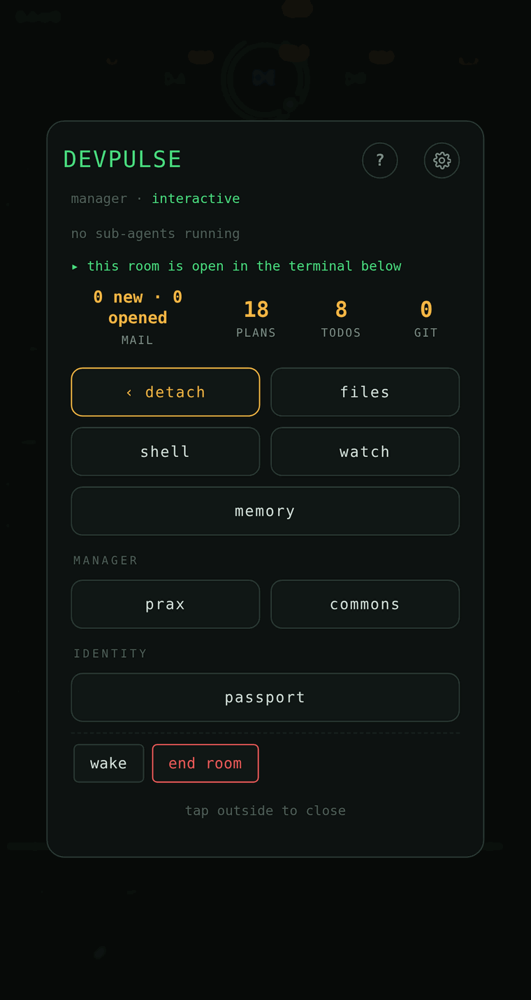
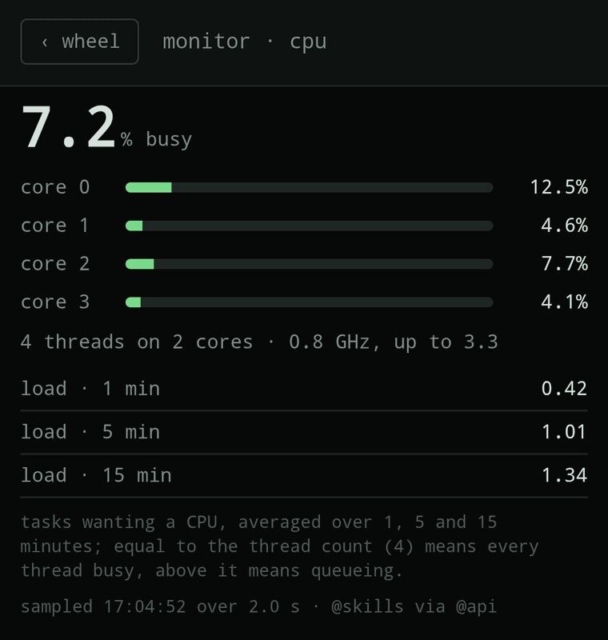

BAUD: your AIPass machine on your phone
See which agents are working, open their live sessions and type into them, and check on the machine itself, from your phone's browser. Served from your own machine, with no account with us.
What it is
BAUD is the phone face of your AIPass machine: the agents, their rooms, the machine monitor, your project files, git changes and backups. AIPass is what everything runs on; BAUD is how you look at it from anywhere.
What it looks like




What it needs
- An Android phone. BAUD is tested on Android; iPhone is not tested yet.
- Tailscale on the machine and on the phone, so the phone reaches the machine over your own network.
- Linux on x86_64 for the machine.
Pairing
At the end of aipass install, the installer shows a QR code. Point the phone's camera at it and tap the link; the phone signs itself in. The code works once, for five minutes.
A paired phone can act as you on the machine. Guard it like an SSH key, and revoke its access the moment it is lost.
Get it
Installing AIPass sets BAUD up with it. BAUD's own installer also installs both at once:
$ curl -fsSL https://github.com/AIOSAI/baud/releases/latest/download/install.sh | sh- BAUD on GitHub, with the careful install path and its checksum
- Phone setup on Android, step by step
- BAUD's security model